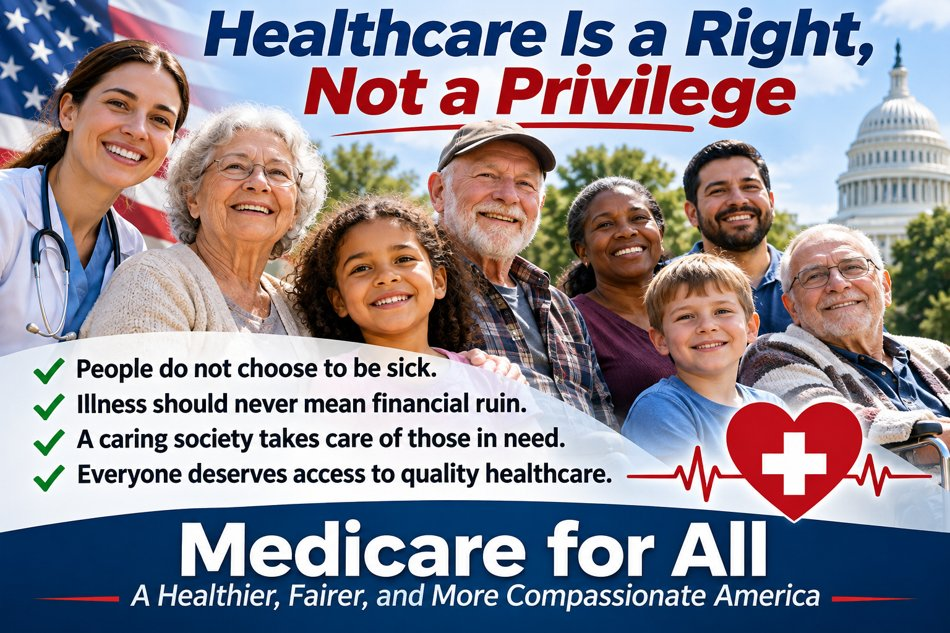
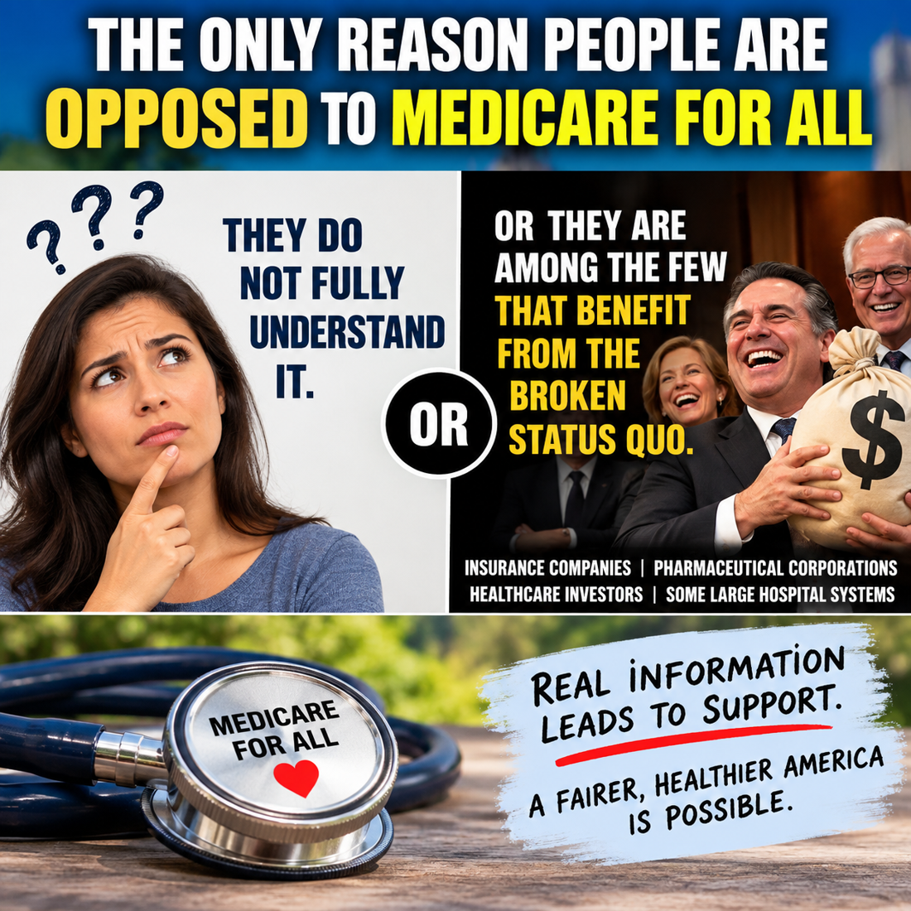
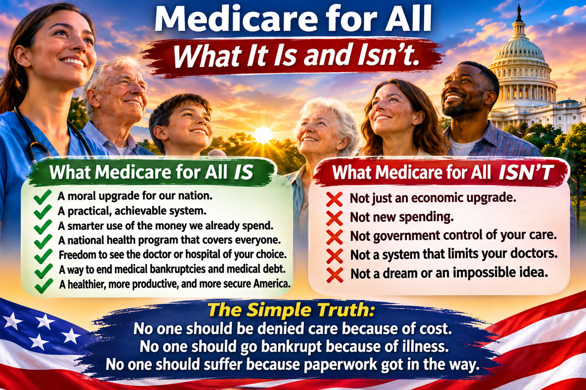

All Articles
Every published article is listed here, newest first. Select a picture or title to read the full article.

44 — Healthcare Is a Right, Not a Privilege
People do not choose to become sick. Illness should never mean financial ruin.
Read article →44 — Healthcare Is a Right, Not a Privilege
People do not choose to become sick. Illness should never mean financial ruin.
Read article →
43 — Education Is the Key
Facts, access, efficiency, savings, and freedom
Read article →
42 — Medicare for All and the Power of Economic Growth
How healthcare reform could support jobs, incomes, and growth
Read article →
41 — Healthcare Can Unite Us
Finding common ground across political differences
Read article →
40 — Every Veteran Deserves the Care They Earned
Strengthening healthcare for veterans and their families
Read article →
39 — No One Should Lose Their Home Because They Got Sick
Preventing medical debt from becoming housing insecurity
Read article →
38 — Recovery Is a Priority for Everyone
Mental health, addiction treatment, and the opportunity to recover
Read article →
37 — Aging With Dignity Is a Right, Not a Privilege
Long-term care and the right to age with dignity
Read article →
36 — Everyone Deserves to See Life Clearly
Why vision care belongs in universal healthcare
Read article →35 — Everyone Deserves to Hear Life Clearly
Hearing care should be accessible to everyone
Read article →
34 — No One Should Have to Choose Between Medicine and Rent
Making essential prescriptions affordable for everyone
Read article →
33 — Specialist Care Should Be About Healing, Not Your Insurance Network
Specialist care based on medical need, not ability to pay
Read article →
32 — Your Smile Finally Counts
Why dental care belongs in universal healthcare
Read article →
31 — Choose Your Doctor, Not Your Insurance Network
Freedom to choose a doctor without insurance-network barriers
Read article →30 — Every Hospital Visit Should Mean Care—Not Debt
Comprehensive hospital care without medical debt
Read article →
29 — Insured but Still Unable to Afford Care: The Walmart Worker’s Dilemma
Why having health insurance does not always mean affordable access to care.
Read article →
28 — Call It What It Is: Universal Healthcare
Why the name Medicare for All can be confused with today’s Medicare.
Read article →
27 — Medicare for All, American Manufacturing, and the Cost of Competing
Could healthcare financing reform help U.S. manufacturing more sustainably than tariffs?
Read article →
26 — The Hidden Economic Dividend of Medicare for All
How reform might improve competitiveness, wages, and purchasing power.
Read article →
25 — The True Cost of American Healthcare: What the Bills Don’t Show
Employer burdens, job lock, delayed care, and other indirect costs.
Read article →
24 — The Medicare Part B Premium: A Heavy Burden on Fixed Incomes
Why monthly Part B premiums can strain retirement budgets.
Read article →
23 — Is America Ready for Medicare for All?
Why public understanding matters when evaluating a national health plan.
Read article →
22 — Why Do People Oppose Medicare for All?
Understanding the objections, the financial interests, and the evidence.
Read article →21 — The Status Quo Is Not a Healthcare Strategy
Why meaningful improvement in American healthcare requires fundamental change.
Read article →20 — The Patient, Not the Bill
Healthcare should focus on treatment and recovery, rather than the fear of paying for care.
Read article →19 — Judge Medicare for All on Its Merits, Not Its Political Label
A proposal should be judged by its actual design and results, not historical ideological associations.
Read article →18 — The Moral Imperative of Medicare for All
Why caring for our neighbors can unite Americans around a healthcare system that serves everyone.
Read article →
17 — Medicare for All: What It Is—and What It Isn’t
A practical explanation of what Medicare for All proposes, what it does not mean, and how universal healthcare could work.
Read article →
16 — When Medical Bills Cost You Your Home
How medical debt, lost income, and unaffordable healthcare can put families at risk of eviction, foreclosure, and homelessness.
Read article →
15 — If America Is the Greatest Country, Let’s Prove It
Let’s build a healthcare system worthy of America’s ideals—one that puts We the People first and leaves no one last.
Read article →
14 — When Denying Care Becomes a Business Strategy
Congressional scrutiny of insurance claim denials, corporate incentives, and the consequences for patients.
Read article →
13 — Do We Really Want a Healthcare System That Profits from Sickness?
Who benefits from healthcare's financial incentives—and how could Medicare for All better align payment with patient health?
Read article →
12 — U.S. vs. Canada: A Healthcare Reality Check
Canada faces waits for some services, while U.S. patients can face substantial medical bills. What can Americans learn from both systems?
Read article →
11 — Why Business Leaders Should Be Enthusiastic About Medicare for All
How Medicare for All could help employers through more predictable costs, simpler administration, worker mobility, and global competitiveness—while weighing financing trade-offs.
Read article →
10 — We Don’t Need to Rob the Rich to Help the Poor
How fixing healthcare’s costly systems could benefit businesses and working families without turning economic classes against one another.
Read article →
9 — The Healthcare System Isn’t Broken — It’s Doing What It Was Built to Do
A look at how healthcare financing incentives, insurance complexity, and employer-based coverage can conflict with patient needs—and what reform could change.
Read article →
8 — Medicare for All: A Bipartisan Opportunity
How universal healthcare could help families at every income level and improve business competitiveness—and the trade-offs a credible proposal must address.
Read article →
7 — Better Healthcare Could Cost Less Than We Spend Today
Studies suggest Medicare for All could provide universal coverage while reducing overall healthcare spending; savings depend on policy design.
Read article →
6 — Healthcare Needs Solutions, Not Stonewalling
An opinion calling for concrete healthcare solutions instead of misinformation and political stonewalling.
Read article →
5 — Socialism as a Political Weapon
Why public policies should be evaluated on their merits, not dismissed with political labels.
Read article →
4 — A Festering Wound: The History of Medicare for All and Congress’s Failure to Act
A century of national health insurance debates, landmark reforms, and stalled Medicare for All proposals—and the human cost of leaving America’s healthcare problems unresolved.
Read article →
3 — Obamacare vs. Medicare for All: The Difference Between Having Insurance and Affording Healthcare
Obamacare expanded access to insurance, but premiums, deductibles and copays can still make care unaffordable. Compare what patients pay under ACA plans with a proposed Medicare for All system.
Read article →
2 — Can America Afford Medicare for All—or Can We Afford to Keep the System We Have?
An evidence-based look at U.S. healthcare spending, insurance costs, administrative waste, and the potential trade-offs of Medicare for All. Savings depend on the specific plan and assumptions.
Read article →
1 — Medicare for All: How Would Hospital Billing Actually Work?
How would Medicare for All pay hospitals? Explore simplified national billing, hospital global budgets, patient care, staffing, and financial accountability.
Read article →Share This Page
Help others explore the ideas and evidence behind Medicare for All.
When posting on Facebook, paste these hashtags into your post text. Sharing services may not automatically include them.